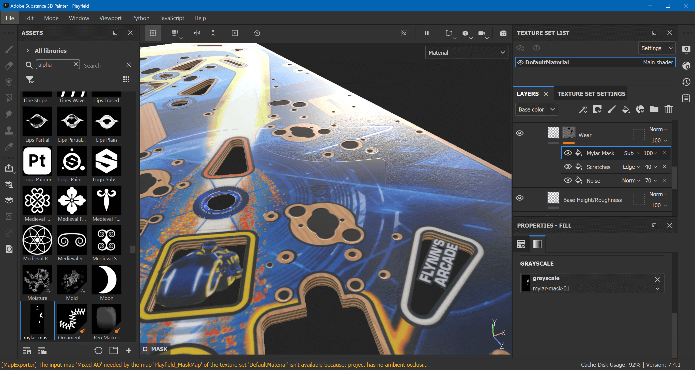
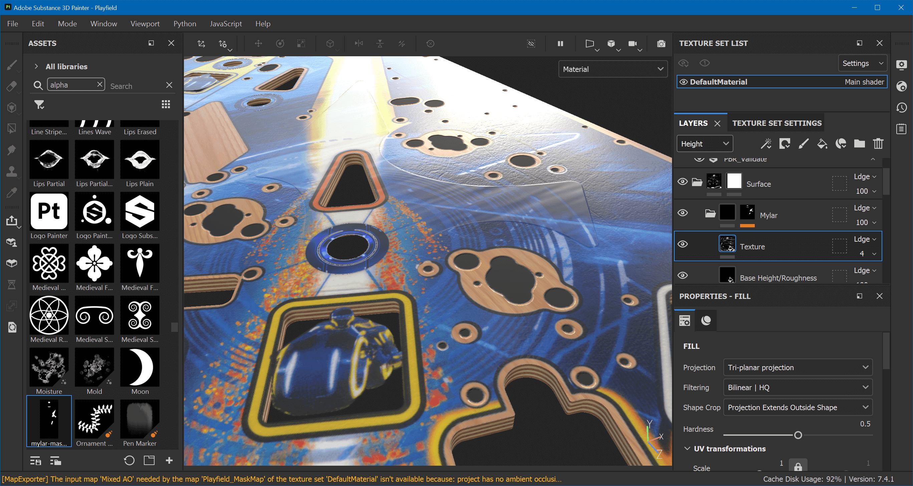
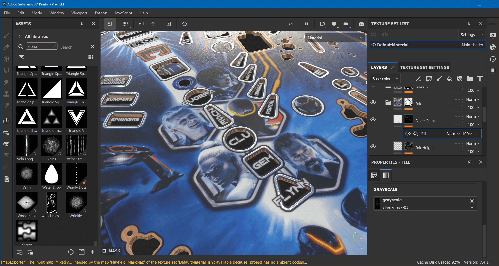

Texturing (details)
Most projects probably don't have Mylar stickers or silver paint on the playfield, which is why we decided to dedicate a separate page for this. If you have something similar to add to your playfield, do it before the Wrapping Up section of Texturing.
Mylar Stickers
We find those in-between the bumpers and at a few other places, and their texture is obviously different than the rest of the playfield.
First of all, we don't want the wear of the ink to influence our stickers. So go down to Ink and click on the mask of the Wear layer. Add a new fill effect above Scratches and name it Mylar Mask. Set the blend mode to Subtract. Import mylar-mask-01.png as alpha and assign it to the fill effect's grayscale. The sticker is already visible:

Go up to the top and create another folder layer above our existing Fake Holes layer and call it Mylar. Add a white mask and a fill effect named Mylar Mask, and search for mylar-mask-01 for its grayscale.
We're going to create two fill layers in here. One for the general height and roughness, and another for the texture. Name the first Base Height/Roughness and the second Texture. The second sits above the first.
Base Height/Roughness
Select this layer and disable all channels but height and rough. We want the sticker to come up, so set the height to something small like 0.0016. In terms of roughness, we want the sticker to be "less glossy" than the ink besides it, so 0.17 looks like a good value.
Texture
The texture should only be applied to height, so Alt-click on it. For its values, I've gone for Directional Noise 4 with Tri-planar Projection and otherwise default parameters. At 100% this effect is way too high, so I've set the view mode of the layers to Height in order to be able to turn down the opacity to 4.
The final result looks like this:

Silver Paint
The silver paint goes around the inserts, where our Pro playfield scan has normal ink. Due to our height map, which means a slight downwards bevel, where it actually should go up. Let's fix that.
Under the Ink layer, we have another Ink Height layer, which has Ink Alpha on its mask. Add another fill effect above and name it Silver Height. Set the blending mode to Subtract. For the grayscale values, import silver-mask-01.png and assign it.
Then, add another fill layer above Ink Height and name it Silver Paint. Make it apply to color, height, rough and metal with the following values:
- Color:
#E7E7E7 - Height:
0.02 - Roughness:
0.0837 - Metallic:
1
Finally, apply the silver mask to the layer. The result is a nicely reflective material around the inserts:
